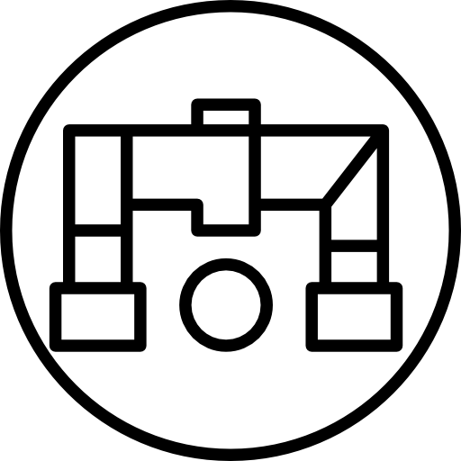

About Guelph
Guelph Water Services supplies safe and clean water to
the residents of Guelph. With over 30 Water pumping and distribution stations Guelph Water services works day and
night to ensure the quality and quantity of water that reaches our residents meets our standards.
Fun fact: Guelph is one of the largest Canadian cities to rely almost exclusively on groundwater for its drinking supply!

There are many people that work together
to ensure water comes out of your kitchen sink! We have operators, compliance, conservation,
the SCADA team, and a whole lot of other groups that ensure water reaches your business or
home.
I was welcomed onto the SCADA (Supervisory Control and Data Acquisition) team with open arms. Our role at the city of
Guelph is to provide programs that automate the stations, provide interfaces that allow people to operate
stations remotely and view data and troubleshoot the system if something goes wrong.
My Job
For this semester I was a SCADA Developer Co-op and worked along the rest of the SCADA team to complete a few projects. Some of the projects I worked on included:
Standardizing our Operator Interfaces
- Created and documented a programming standard for our new Quickpanel interfaces, located at each station
- Updated our 27 Quickpanels to match the standards
- Deployed and tested the new Quickpanels on site
S1A Programming Interface
- Updated main programming template used with Allen-Braldey PLCs and the iFix Environment
- Created S1A sample Process control Narrative
Helmar Project
- Created a Process Control Narrative for the site, including process design
- Programmed the Allen Bradley SLC 500 using Ladder Logic
- Created a main SCADA interface (iFix) for the site
- Tested the code and the iFix interface to ensure it works as specified in the PCN
In addition
to these projects I was also tasked with other jobs to be done as they came up. These included:
- Maintained telemetry for DMA (District Metered Area) Flowmeters across the city to ensure they were logging data regularly
- Developed large dashboard displays of process data using Open Source reporting tools
- Troubleshoot Quickpanels and SCADA system with the help of colleague
- I/O testing
- Commissioning process equipment such as pumps and motorized valves
My Semester Goals
-

Programing
During this Co-op I was tasked with programming the automation code for our Helmar site using an Allen Bradley SLC 500 and Ladder Logic Programming. This was something I had never done before and had no knowledge of prior to my co-op. Because this was something entirely new to me one of my goals was to learn and be confident in programming an Allen Bradley PLC. While I would have liked to program more than one site, projects are always longer than they are expected. I can now confidently say that I am much more confident in Ladder Logic programming and programming for automation. While this was a pretty tough task, I was able to step out of my comfort zone to ask questions, understand the concepts, and get the job done.
-
Adhering to Company Standards
Another one of my goals was to learn more about best coding practices and adhering to company standards. I found this to be a very important aspect of my job as it allowed others to understand what my code was doing and what I was thinking. This made it a lot easier for others to help me when I was stuck. I was able to really understand the importance of following standards when I was met with the task to create a company standard for our touchscreen displays. At the end of my co-op term I was able to easily pick out things that did not match our standards and fix them right away.
-

Understanding P&IDs
From this Co-op, I wanted to gain knowledge in and understand how to read and use P&IDs (Piping and Instrumentation Diagrams). It is important as a programmer to understand how the system you are programming works. P&IDs are a very important tool to understand process systems. To learn how they work I was able to walk around a site with the P&ID in hand and figure out how it works. While I struggled with this in the beginning it became clearer as a dove deeper into my work. While I was creating my Process Control Narrative I looked at the P&ID to understand the station and learn more about P&IDs. I can now understand what a system is doing and how it operates by looking solely at its P&ID.
-

Writing Process Control Narratives
During this Co-op I also wanted to be able to write comprehensive control system functional specifications, like process control narratives (PCN). Along with the station I programmed I was tasked with writing the Process Control Narrative prior to programming it. With the help of my supervisor I was able to comprehensibly understand the system I was to program, the specifications of the equipment, and write it in a way that was comprehensive and would assist in programming. I was also tasked with updating our current Process control Narrative template to be up to our standards. I can confidently say that I am confident in writing a structured and comprehensive Process Control Narrative.
- Allen-Bradley RSLogix 500 programming for SCL500/micrologix
- Allen-Braldey RSLogix 5000 programming for CompactLogix
- GE Proficy iFix programming and HMI screen design
- PME (Proficy Machine Edition) programming
- Importance of Standardization
- Designing and implementing real-time code in a critical process control environment
- Writing and understanding Process Control Narratives
- Understanding the structure and function of SCADA (supervisory control and data acquisition) systems
- Familiarity with municipal water treatment, storage and distribution systems
- Reading and Using P&IDs and PFDs
- Effective communication via emails
- Time-Management
Skills
During my work at Guelph Water Services I was given the opportunity to learn and practice new skills, technical and non-technical.
This co-op provided with valuable experience and the opportunity to learn new skills, many of which were not covered as part of my academic studies.
Conclusion
My past 4 months as a SCADA Developer Co-op at Guelph Water Services was a wonderful opportunity. I learned so much in so little time. I was able to learn about working in production, standardization, and how water distribution systems work. What I have learned on this co-op was in-depth, unique, and very beneficial to my academic and personal growth.
Thank You!
I owe a big
thanks to my SCADA team for making this co-op term as great as it was!
To Graham Nasby, who taught me everything I needed to know, and more. To
Richard for always being a chair swivel away from the answer to my questions.
To Sahil, my co-op counterpart, for navigating a new job with me.
And last but not least, I owe a big thanks to the entire tech trailer for the
fun and light-hearted environment!